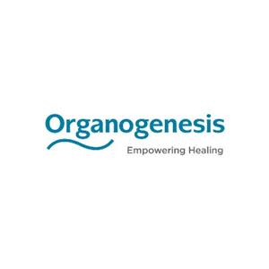

David Bridwell has led brand strategy, content development, and demand generation programs across payer, provider, and health technology organizations, with consistent attention to the structural barriers that shape healthcare marketing. His work has required familiarity with the financial structures, insurance intermediary dynamics, and behavioral barriers that shape how patients, providers, and payers make decisions in healthcare.

Paradromics is developing a fully implantable brain-computer interface for patients with conditions including ALS and locked-in syndrome, requiring FDA clearance, payer reimbursement coverage, and clinical adoption to reach the market. The company operated in a space dominated by Neuralink's consumer-facing media presence, where clinicians and biotech investors demanded clinical evidence rather than technology hype, and where AI search engines were listing competitors ahead of Paradromics for key queries. The company's web presence and social channels underrepresented its clinical positioning, and its brand had not been clearly differentiated from the consumer BCI category.
David led brand strategy and content development across YouTube, LinkedIn, and X, establishing a positioning framework built around clinical durability and what the team called the "Adult in the Room" persona, using a tone of calm conviction to differentiate Paradromics from consumer BCI competitors. He repurposed leadership interviews into platform-native assets, growing the YouTube channel from zero to over 200,000 annual views, and built a Generative Engine Optimization strategy that resulted in Paradromics being described as the "leading developer" and "premier high-bandwidth neurotechnology leader" in responses from Perplexity, Gemini, and ChatGPT. He also developed the Reimbursement Brief, a payer and investor narrative anchored in economic models showing long-term caregiver cost reduction. The full program drove a 215% increase in web traffic and a 362% increase in social engagement.

Blue Cross Blue Shield of Alabama is the state's largest health insurer, serving commercial, Medicare, and individual marketplace members across Alabama. The engagement came during a period of sustained economic and healthcare volatility when consumer trust in health insurance was eroding, and the brand needed to move beyond product messaging to build emotional loyalty. The campaign also had to address the structural reality of how health insurance is sold, where the employer is often the true commercial buyer and individual member loyalty is built separately through plan tool usage and benefit communication.
David contributed to a multi-channel campaign spanning broadcast, digital, mobile, and display that used psychological principles including authority, reciprocity, and social proof to shift BCBS from a transactional product to a brand associated with care continuity. Digital executions embedded specific plan tools including Teladoc, the Dr. Finder platform, and wellness programs directly into ad experiences to drive actual member engagement. The B2B track framed the BCBS card as a valued employee retention asset for small business owners, directly addressing the commercial insurance buyer's decision criteria. The campaign delivered a Net Promoter Score three to four times the national average, making BCBS of Alabama the top-ranked Blue Cross plan in the country.

Intermark Group is a full-service advertising and marketing agency with healthcare and financial services clients, competing in a market where demonstrated expertise in behaviorally grounded marketing directly influences client acquisition. The agency had no structured editorial calendar, minimal organic search traction, and no YouTube presence when David joined. The goal was to build a repeatable content program that would generate consistent inbound demand and reinforce the agency's positioning as a science-backed marketing partner.
David led content strategy and production across the agency blog, social media channels, YouTube, and a recurring webinar series, using Semrush to guide editorial decisions and track performance by channel. He created executive content formats including the CMO Minute and Ad Psych Series, which translated the agency's behavioral science expertise into thought leadership accessible to marketing and business leaders. His work grew organic blog search traffic 475% year over year and YouTube viewership 403% year over year, scaling the channel from zero to 40,000 annual viewers.

Moffitt Cancer Center is a freestanding NCI-designated Comprehensive Cancer Center in Tampa, Florida, operating without the built-in primary care referral networks that most academic medical systems depend on. Despite posting survival rates up to four times the national average for certain cancers, Moffitt was treating approximately 5% of Florida's cancer patients, with affluent patients defaulting to legacy institutions in New York and Boston and nearly 30% arriving with an incorrect diagnosis or staging. A new CEO brought a mandate for bolder brand positioning across symptomatic patients, prevention audiences, researchers, and major donors.
David contributed to a brand strategy anchored in "Urgency" and "Boldness," building distinct messaging tracks for each audience segment — including rational urgency-based messaging for symptomatic patients who needed to understand the risk of delayed or incorrect initial care, and aspirational vision-driven messaging for major donors focused on funding AI, machine learning, and cell therapy research. The strategy also generated patient demand strong enough to maintain favorable positioning with Medicare Advantage plans using selective contracting. The resulting campaign delivered a 66.5% year-over-year increase in new patient conversions and a 40% lift in digital engagement.

OhioHealth is a community-based health system in Columbus, Ohio, competing in a cancer care market where Ohio State University's James Cancer Hospital held commanding brand recognition as an academic medical center with built-in research credibility. At the time of the engagement, 52% of OhioHealth's own associates and 83% of surveyed consumers named the James first when thinking about cancer care. The system was simultaneously launching a new Blood and Marrow Transplant inpatient unit, requiring a campaign that could build category credibility while managing the psychological and insurance barriers specific to cancer care in a community health system setting.
David contributed to a campaign strategy built on the "Keep Making Plans" framework, which positioned OhioHealth's cancer program around life after treatment rather than the clinical intensity of a diagnosis, adopting a challenger brand mentality to compete against an academic institution on emotional rather than research-credential grounds. The strategy deployed grassroots experiential activations with consumer brands including Jeni's Ice Cream and Sherwin-Williams to intercept target audiences in familiar community settings. Hyper-targeted audience personas supported tailored paid media, community PR, and in-clinic programming including a milestone bell-ringing initiative and patient-facing Spotify playlists designed to build trust at the local level and support self-referrals into the system.

Organogenesis's ReNu is a single-injection amniotic suspension allograft administered by orthopedic specialists to provide long-lasting relief for osteoarthritis and joint pain. As a novel biologic treatment, ReNu faced significant healthcare system barriers including coverage restrictions, prior authorization requirements, and step therapy protocols from insurance intermediaries who classified it as experimental. Patients presented an additional behavioral barrier, frequently reporting joint pain but failing to seek treatment when they associated medical intervention with surgical complexity or short-term results.
David contributed to a campaign that positioned ReNu as the "Intuitive Choice," using System 1 psychological framing to reduce patient inertia and make a biologic injection feel like a straightforward, low-risk path to long-lasting relief. To work around insurance coverage barriers, the strategy targeted affluent osteoarthritis patients with household incomes above $100,000 who were health-proactive and willing to pay out of pocket for premium care, bypassing the financial gatekeeping that would have limited market access through standard insurance channels. A Physician Finder activation steered motivated patients directly toward orthopedic specialists already prepared to administer ReNu, creating a directed demand generation funnel that reduced friction between patient intent and clinical conversion.